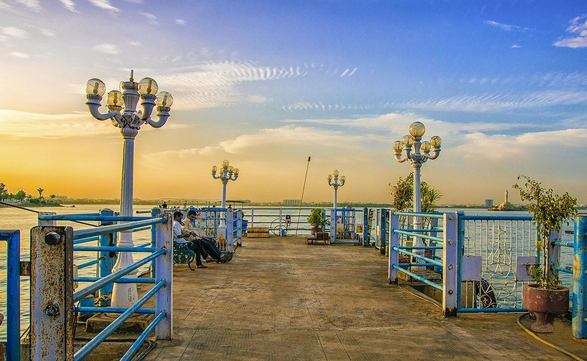
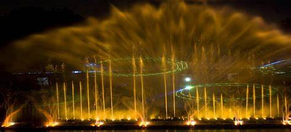

LUMBNI PARK

Lumbini Park, officially T. Anjaiah Lumbini Park,[1] is a small public, urban park of 3 hectares (7.5 acres) adjacent to Hussain Sagar in Hyderabad, India. Since it is located in the centre of the city and is in close proximity to other tourist attractions, such as Birla Mandir and Necklace Road, it attracts many visitors throughout the year.
Boating is one of the best part and people go to the Buddha idol placed in the middle of the tank band in the boats. Constructed in 1994, the park is named after the former Chief Minister of Andhra Pradesh T. Anjaiah.
The park is maintained by the Buddha Purnima Project Authority that functions under the directives of the Government of Telangana. In 2007, it was one of the targets of the 25 August 2007 Hyderabad bombings that killed 44 people.

How to reach:

By Air
The nearest airport is in hyderabad

By Train
The nearest railways is in hyderabad

By Road
lumbni park, the most famous tourist destination in Hyderabad, can be used as a landmark. A bus,cab,local rickshaw can also be taken to reach the capital.